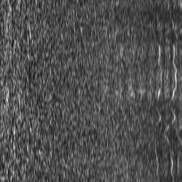
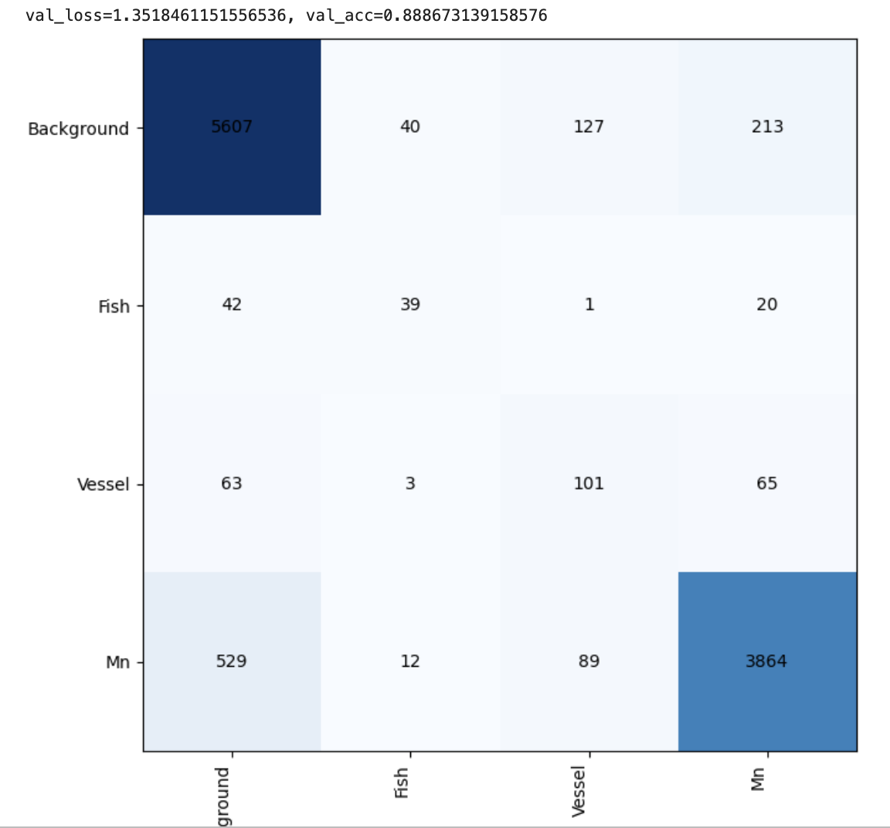
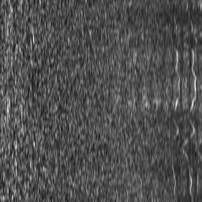

Whale1

Whale2
vessel1


vessel2

Small Convolutional network table
Previous work in this field, including the paper we have based our work on, were mostly related to detecting and classifying biologic sound signatures from underwater acoustic microphones. The goal of our work is to try and classify whale calls, vessels, fish and background noise. Training to detect vessels proves to be a difficult problem with the given dataset due to the large imbalance between the relatively small number of vessels and fish, and the large proportion of whales and background noise. The initial paper also used a slightly modified version of the ResNet-50 model. We theorized that ResNet-50 was unnecessarily large for the classification task, so we experimented with smaller models to compare performance between them.
Our work builds off of A Convolutional Neural Network for Automated Detection of Humpaback Whale Song in a Diverse, Long-Term Passive Acoustic Dataset [1]. The dataset used in this paper and our work is gathered by NOAA in the Pacific Islands Passive Acoustic Network (PIPAN) which takes advantage of High-frequency Acoustic Recording Package (HARP) hydrophones, specially designed for detecting whales [2, 3]. The PIPAN network of hydrophones uses a sampling rate of 10kHz and saves the data in a special audio format, called xwav which contains additional metadata. The data was transformed via an "acoustic front end" to a spectrogram via a Short-Time Fourier Transform and was normalized using Per Channel Energy Normalization (PCEN) [5]. The hyper parameters of PCEN were learned by the model during training. The resulting spectrogram had a size of 96 frequency bins x 128 time bins. This was then passed through a slightly modified ResNet-50 model. A ResNet-50 model was chosen due to its proven performance in classifying audio data [6, 7].
The model is a binary classifier, outputting positive for a whale, or negative for no whale. The performance of the model was determined across a 75s chunk of audio data. The spectrogram the model takes as input is smaller than 75s. Therefore, the model has multiple attempts to be able to detect, or not detect, a whale. Across these 75s segments, the paper reports the model was able to achieve an average precision of 0.97 and AUC-ROC of 0.992. We feel that determining model performance on 75s audio segments is useful operationally for NOAA but misleading for true model performance. This is why we report accuracy across each spectrogram as opposed to multiple at a time. The model also only detected whale noises, and ignored the other labels that appeared in the dataset. Being able to detect vessels as well as whales posed an interesting challenge that we chose to explore. Additionally, given the general rarity and lack of complexity in a spectrogram in comparison to a traditional image that ResNet-50 was initially designed for. We feel that a smaller network could achieve similar results while greatly reducing power consumption and compute complexity allowing for off site deployment of these models.
We processed around 1,000 hours of audio data into spectrograms, totalling 4-6TB of raw audio. Given computation limitations, we were forced to use our own implementation of the short-time Fourier transform (STFT) as opposed to the original plan of re-using the original paper's acoustic front end. This ended up being beneficial as we are now able to control the entire data pipeline from audio to classification. We took advantage of the additional metadata contained in the XWAV file format and only read and processed 225s chunks of data as opposed to the entire 24 hour XWAV file. We then sliced the resulting spectrogram, which was longer than 256 time bins down to center the labeled classification in the time axis. This was identified early on as a potential issue with the training data. This method always places a whale call in a very similar y position, and therefore, would potentially only learn to detect whale songs that occur in the middle of the spectrogram as opposed to whale songs that occur on the edges of spectrograms.
We converted the audio files into spectrogram images using a similar method to the original paper. We passed the data through the STFT and PCEN layer. Due to computational, storage, and time limitations, our STFT and PCEN used smaller window sizes than the original paper. Due to similar constraints, the PCEN hyper parameters were unable to be trained by the model and instead were tuned manually with sample spectrograms. The PCEN algorithm used was written in PyTorch to allow for better future integration with our current model [5]. The hyperparameters we decided on were: s=0.008, alpha=0.8, delta=200, r=0.05, length of fast fourier transform window=4,096, number of mel frequency bins=256, hop length=300, hann window function, and a minimum and maximum frequency of 10Hz and 4kHz respectively. The PCEN specific hyperparameters were influenced heavily by the PCEN paper [8]. These hyperparameters were found to be able to both emphasize whale calls and vessel noise.
The spectrograms that are output are much larger and contain more information to learn than the original paper's spectrogram of 128x96 pixels. We believe that the intricacies of the different classes are separated by very small differences in pixels. Therefore, we believe the detail in the image will lead to enough of a benefit in accuracy that it would outweigh the drawbacks of decreased data loading speed. These images (256 x 256 pixels), could then be fed into a convolutional neural network to then be classified into our target classes: Whale, Vessel, Fish, and Background (extended from the above paper which just classifies between Whale and not Whale). While the original paper used 64 x 64 pixel images into a resnet-50 architecture, we implemented two distinctly smaller convolutional networks: a basic convolutional network without residual connections, and resnet-18. Our intention was to perform the classification task using smaller networks to see if we could get similar or better results.
The models were trained with support provided by Research Computer at Northeastern University [4]. The models were trained with 1 P100 GPU with a 28 core CPU with access provided through the Undergraduate Courses Cluster.
Our developed convolutional network used 19 layers (four groups of conv2d -> dropout -> ReLU -> batchnorm, followed by Avgpool, linear, and softmax layers) and 9152 parameters total. Code Here
We slightly modified a base ResNet-18 model. We changed the input to be able to take grayscale images. And modified the output to output 4 classes. Code Here
We tested a basic bottle-neck architecture using the pytorch implementation. These have been shown to be able to allow models to have more layers improving accuracy. Code Here
We finally tested a very basic Wide ResNet architecture. These have been shown to improve accuracy on shallower networks. Link to implementation Code Here
We utilized the cross entropy loss function for our model. To address our extreme class imbalance problem, we modified the weight parameter in the cross entropy loss function. By setting the weights to be inversely proportional to the distribution of image classes in the training set, we can penalize mistakes on the less common classes more. The class distribution was: 55.8% background, 0.8% fish, 2.1% vessel, and 41.3% whale. Thus, vessels and fish, which had significantly less images than whale and background in the training set, were weighted significantly more by the loss function. This solution is equivalent to balancing the distribution of images in each class, and allows us to find better classification barriers between the common and uncommon classes.
We also experimented with the label smoothing parameter in the cross entropy loss function. Label smoothing is a technique meant to prevent overconfident predictions from the network by modifying the ground truth target labels. Specifically, it adds a uniform distribution (determined by smoothing parameter alpha) with the one hot target vector to give some probability to the other classes for the target. Our motivation for using this revolves around our concerns of labeling issues in our dataset. While we have no specific evidence to back this up, after manually searching through the spectrograms we have seen potential images that seem to be mislabeled. There are two potential reasons we believe to be the cause of this. The first is human labeling mistakes. There were hundreds of hours of audio data labeled, there is bound to be several classes mislabeled. The other cause was the non-majority classes were not labeled with as much accuracy in the time range as the whale class. Whales were labeled with around one second of precision while the vessel and fish class were labeled within a range of 75 seconds. The entire 75 second block of audio was considered to contain the target noise, even if the signature only started half way through the 75 second block.We found that the best accuracy our convolutional network was able to achieve was an 87 % train accuracy and an 88 % validation accuracy. Before we modified the weight and label smoothing parameters, we were able to achieve the same train and test accuracy. However, this preliminary model only made predictions on the majority Background and Whale classes, and made 0 predictions on the minority Fish and Vessel classes. This reflects a common problem while using accuracy as a metric for class imbalance problems: often a good accuracy can be achieved by predicting only on the majority class. However, this model does not practically serve our goals of classifying between all four classes.
After trying different sets of parameter combinations, the best configuration we found was an alpha= 0.1 label smoothing, and a modified inversely proportional weights (specifically we took the square root of inversely proportional weights, leading to weights of [1.0000, 8.1887, 5.2139, 1.1622] for Background, Fish, Vessel, and Whale, respectively. This model achieved almost the same train and test accuracy, but lead to a very different confusion matrix. Albeit the slightly worse prediction on the majority classes, this model did a good job on all four classes. Other parameters we found worked well included a learning rate of 0.01, a weight decay of 0.0001, and a batch size of 512. Some configurations we tested for this model are shown in a table (figure 6) in the appendix.
The ResNet-18 model was able to achieve 89.5% accuracy on the test set. Our wide ResNet model was able to achieve 91% accuracy on the test set. Our bottlenecked ResNet model was able to achieve 89.2% accuracy on the test set. See below for confusion matrices. The wide neural network had a higher recall than the base ResNet-18 model, but in turn, had a lower precision than the ResNet-18 model. All model still had fairly good discriminability among classes (each class had more correct predictions than incorrect ones).Simple Model with 9,152 parameters Confusion Matrix
Confusion Matrix of ResNet-18
Confusion Marix of Bottleneck ResNet
Confusion Matrix of Wide ResNet
We also explored a little inside the model to try and figure out what it was learning. Though the results are fairly basic, we can see in the images in the Appendix that node 386 seemed to activate very strongly for lower frequency noises. This node activation seemed to correlate heavily with the model detecting whales. Both whale images shown had node 386 having a high activation on the lower frequency calls. When a vessel had a signature in the lower frequency, this same node had high activations, and was mis-classified as a whale instead of a boat. The signatures, to a human, appear very different. However, when a vessel had a tonal in the higher frequencies, node 386 did not activate as intensely and was instead classified correctly as a vessel. This leads us to believe that parts of the model were unable to learn the shapes of the signatures but instead just learned to correlate the location with the classification.
We were able to achieve success in using two smaller architectures to solve the problem of underwater acoustic classification. The simple model with 9,152 parameters was able to distinguish between whales and not whales. The ResNet-18 model was able to distinguish between whale and background and was also able to perform better than random on classifying fish and vessel despite a very large class imbalance. The ability to classify whale calls with small networks such as the one we provided could allow for low-cost, on-device whale call classification anywhere. Given the moderate success of distinguishing vessel and fish noise from whales and background, we believe there is significant potential in exploring additional machine learning architectures to solve this problem. Architectures such as a deeper ResNet, such as ResNet-34 or ResNet-50 could be interesting in exploring additional classification classification power. We feel though that the biggest weakness in this experiment was the lack of data for Vessel and Fish. Exploring new methods for handling class imbalanced data could lead to potentially large growths. For example, by modifying the parameters of the cross entropy loss function, we were able to mitigate the class imbalance issue and improve prediction accuracy on the minority classes Additionally, the use of a GAN to artificially create spectrograms is another way to create more training data for the classifier.
There is also very little research on what models are actually learning when classifying on spectrograms. We were able to perform an initial investigation into what our models learned and saw that it mostly focused on position in the spectrogram rather than shape. While this could be caused by a significant lack of diversity in the training data, it is also interesting to see how different architectures could be used to try and mitigate this. One very interesting idea would be to use a kernel with a width equal to that of the spectrogram. In essence, you would be creating a fully connected layer across the x axis, and a convolutional layer on the y axis. Spectrograms, unlike images, are not symmetrical across the x, or frequency axis but are symmetrical in the time axis. Therefore, you may be able to create a “fully connected convolutional layer” that takes advantage of the symmetries, or lack thereof, of the spectrogram. The issue is that to be able to gain the benefit of the fully connected layer across 256 frequency bins, there would have to be a very wide convolutional layer, greatly increasing training time and model size.
Whale1
Whale2
vessel1

vessel2
Small Convolutional network table